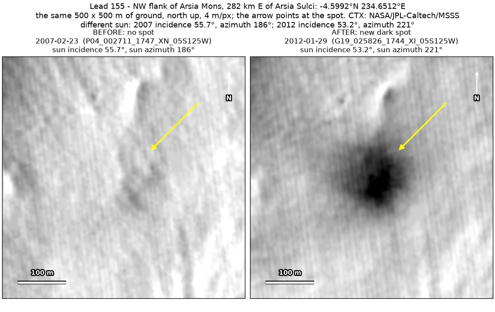
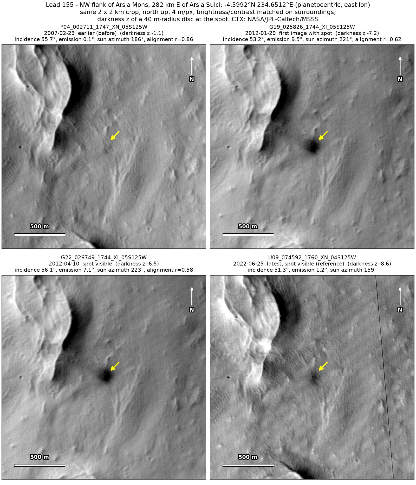
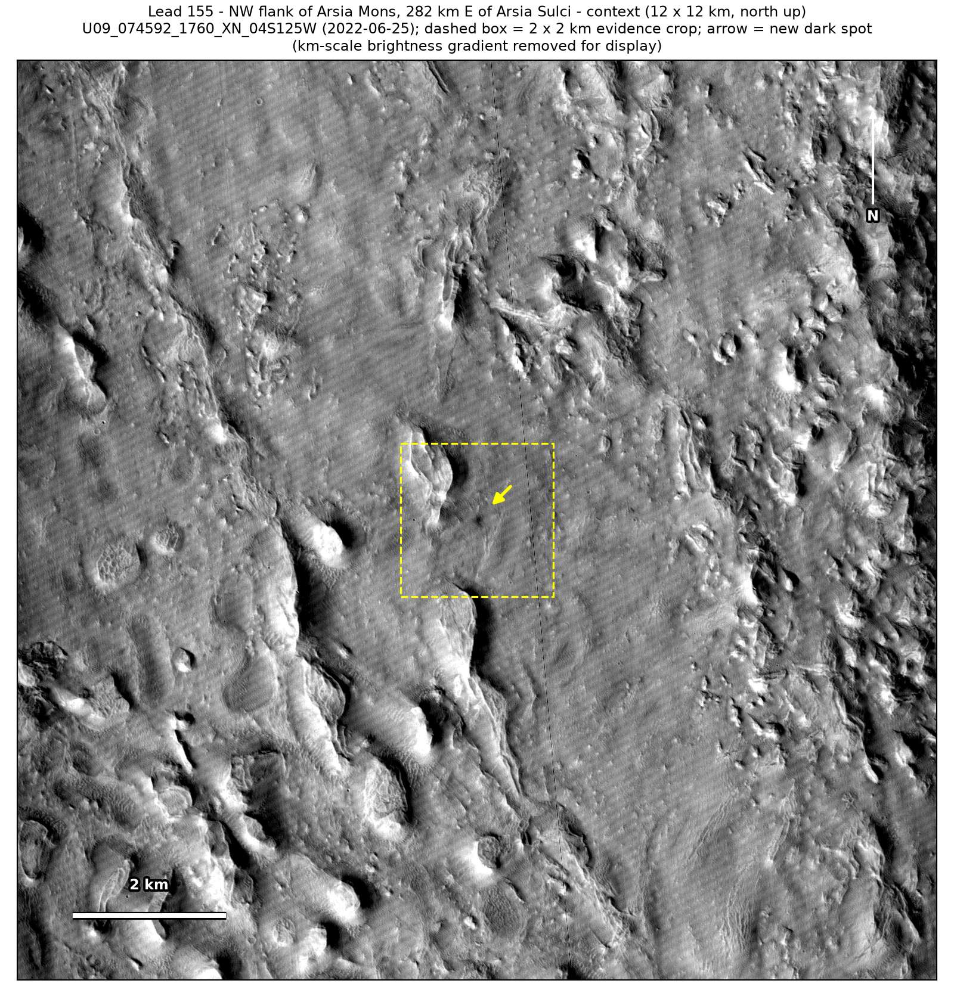

Professor of Mathematics
Paata Ivanisvili
Department of Mathematics, University of California, Irvine

← Possible new impact sites on Mars
Candidate 155: North-west flank of Arsia Mons, 282 km east of Arsia Sulci
Strong · roughly 90%

What changed. A dark spot about 120 m across with a darker core appeared on the north-west flank of Arsia Mons, 282 km east of Arsia Sulci, between February 2007 and January 2012, in three CTX images from three orbits over ten years, smaller and fainter by 2022.
Why it may be a new impact. The only earlier image, from 2007, shows plain ground there under a sun between those of the later images in height and direction, and a compact dark spot with a halo that fades over the years on smooth dusty ground is how the blast zone of a small new crater looks.
- Location
- 4.599° S, 234.651° E (125.349° W)
- Absent
- 23 February 2007
- Present
- 29 January 2012, 10 April 2012 and 25 June 2022
- Size
- Dark spot about 120 m across, with a darker core (122 × 132 m in the January 2012 image, 130 × 132 m in the April 2012 image), smaller and fainter by June 2022 (64 × 128 m)
- Confidence
- Strong candidate; roughly 90% that it is a new impact.
- Caveat
- Only one earlier image exists, and no feature nearby is dark enough to test that image, although the spot is large and dark and the image is clean and well aligned. It lies outside every footprint of the high-resolution HiRISE camera; the nearest ends 27.9 km away. Like every candidate here, it is unconfirmed: see the caveat.

